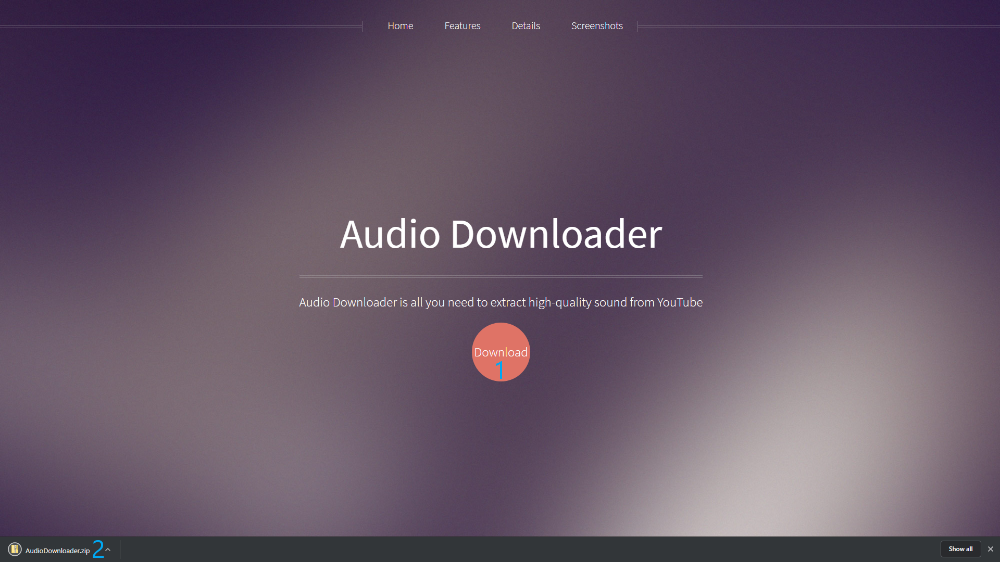
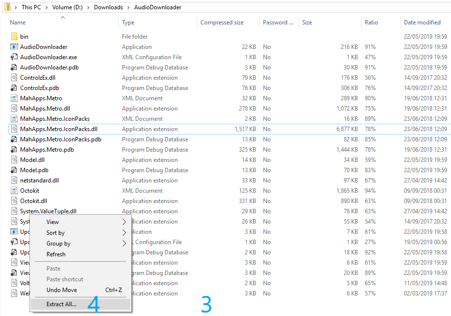
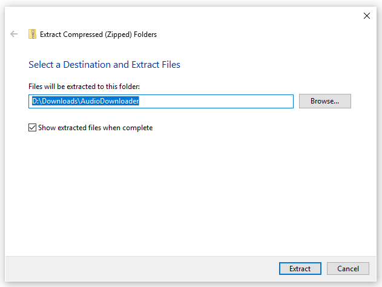
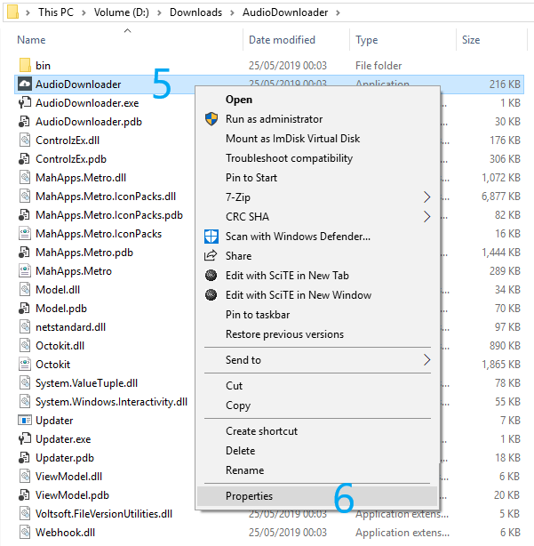
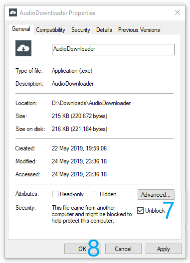

Details
These instructions are for Windows 10 and chrome browser. First of all you need to download the application from the Home page or from this link. Next unpack the contents of the zip file (keeping the zip hierarchy) to a folder of your choice. Unblock AudioDownloader.exe file and run it by double clicking. If you feel you need more information on how to run the Audio Downloader for the first time please keep reading.
Download the application
Press the download button (1) and wait until download completes. Press the downloaded zip archive (2).
Extract the application
The zip archive opens and you can see its contents. Press with the right mouse button not on any file but rather in-between e. g. at the end of the listed files (3). The context menu appears with the option "Extract All" (4).
Now you are be able to extract all of the files to a new folder. In this example the folder is named "AudioDownloader" and it resides in "Downloads" folder. To extract to AudioDownloader folder click the extract button.
Unblock the application
To unblock the application press the AudioDownloader.exe (5) file with the right mouse button and choose "Properties" (6) from the context menu.
In the properties check "Unblock" checkbox (7) and confirm with "OK" button (8). This part deals with the security as the computer knows the file was downloaded from the Internet. You do not have to worry about the security and how the program works inside. This is because the whole application is open source and the code is hosted on GitHub. If you like you can look into the code following this link.
Augue euismod feugiat tempus
Pretium tellus in euismod a integer sodales neque. Nibh quis dui quis mattis eget imperdiet venenatis feugiat. Neque primis ligula cum erat aenean tristique luctus risus ipsum praesent iaculis. Fermentum elit ut nunc urna volutpat donec cubilia commodo risus morbi. Lobortis vestibulum velit malesuada ante egestas odio nisl duis sociis purus faucibus morbi. Eget massa mus etiam sociis pharetra magna.